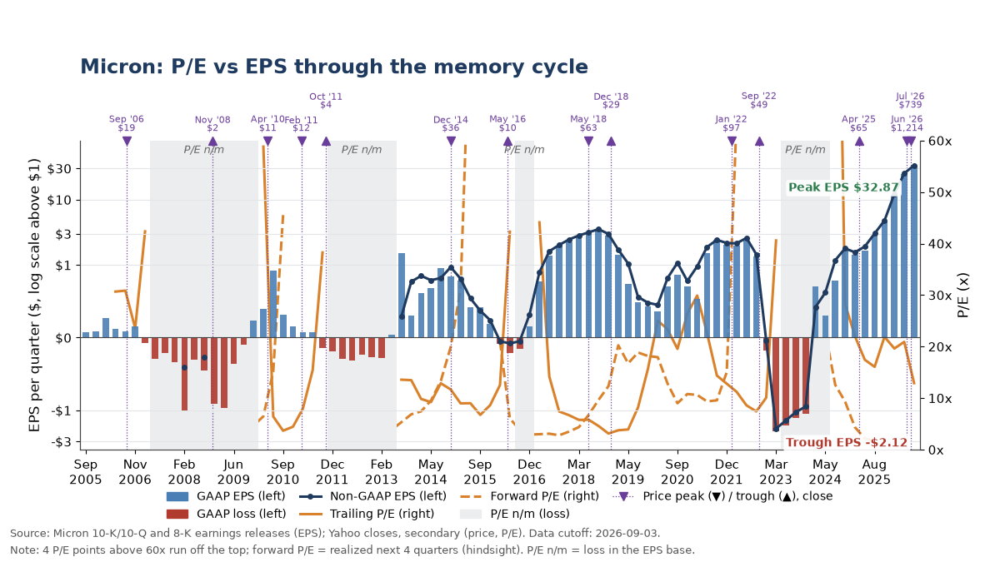
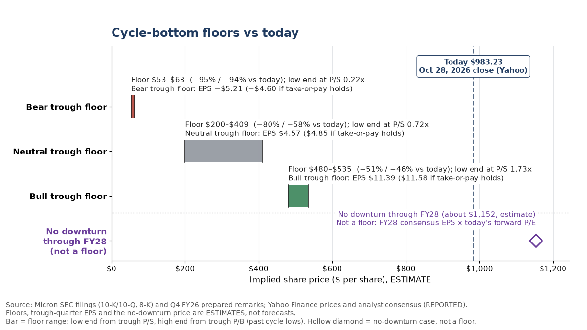

The short version
Micron, the US memory-chip maker, closed at $983.23 on Oct 28, 2026 (FACT, Yahoo). That is about 5.6 times the profit analysts expect for fiscal 2027 ($176.58 a share, REPORTED, Yahoo). The S&P 500 trades at 18.7 times expected profit (REPORTED, FactSet, Oct 23). After customer deposits, Micron holds about $49 of net cash per share (INFERENCE from its 10-K).
A low multiple looks cheap, but memory is a boom-and-bust business. In each of the last five cycles, profits fell 77% or more, or turned into losses, within a year of the revenue peak, and the stock fell before the profits did (INFERENCE from SEC filings, see below).
Our view is Negative (OPINION). AI demand and new long-term contracts make the next downturn milder, but today's price assumes the boom keeps going. Micron itself expects supply to stay "much tighter in calendar 2027 and 2028 than they were in 2026" (FACT, Micron), so this is a view on price versus risk, not a call that the downturn starts soon. If there is no downturn through fiscal 2028, the stock could be worth about $1,152. If a past-style downturn hits, the low could land anywhere from about $53 to $535.
We test the view with a paper put spread graded on Dec 15, 2028.

Source: Micron 10-K/10-Q and 8-K earnings releases (EPS); Yahoo closes, secondary (price, P/E). Data cutoff Sep 3, 2026. Click the chart to open it full size.

Source: Micron SEC filings (10-K/10-Q, 8-K) and Q4 FY26 prepared remarks; Yahoo Finance prices and analyst consensus (REPORTED). Floors and the no-downturn price are estimates, not forecasts. Click the chart to open it full size.
How to read the labels. FACT means it comes from a primary source such as Micron's own SEC filings, linked on each line. REPORTED means a named secondary source such as Yahoo analyst consensus, also linked. INFERENCE is our own arithmetic, shown. ESTIMATE is an assumption we spell out. OPINION is our judgment. UNVERIFIED means we could not confirm it.
Main sources: Micron's Q4 FY26 press release and prepared remarks (Sep 30, 2026), its FY26 10-K (filed Oct 9, 2026) with the revenue and contracts note, and Yahoo's price history and analyst consensus.
Our view and paper trade
View (OPINION): Negative on Micron (MU). At $983.23, the Oct 28, 2026 close (FACT, Yahoo), the market is paying a peak price for shortage-driven profits that should fade once new chip plants come online. The case rests on the payoff, not on a downturn being more likely than not.
Paper trade. One contract of the Dec 15, 2028 $700/$500 put spread.
- Entry: a $68.00 debit at the midpoint ($118 bid-ask mid for the $700 put less $50 for the $500 put), from the Yahoo option chain at 8:32 AM CT on Oct 29, 2026, with MU at $957.72 (FACT). Quotes were $20 wide, so the worst fill is an $88.00 debit.
- Max loss: $6,800 at the midpoint ($8,800 at the worst fill). Max gain: $13,200 ($11,200 at the worst fill).
- Break-even: $632 at expiry, about 34% below the entry price (INFERENCE).
- Right if MU closes below $632 on Dec 15, 2028. Wrong if it closes at or above $632, with the full loss above $700.
- Grade date: Dec 15, 2028, the expiry, graded against the real closing price.
- Why these strikes (INFERENCE): it was the only listed spread whose max gain beat its max loss at both the midpoint and the worst fill, and the $500–700 band sits around the bull-case trough floor below.
- Best case (INFERENCE): if the odds of no downturn through fiscal 2028 are about 40% and every downturn takes MU below $500, the expected value is about +$5,200 per contract. The 40% is our own counter-case estimate (range 30–50%), not market data, and a downturn that stops between $500 and $700 pays less.
The historical rhyme. In 2018 MU fell from $62.62 on May 29 to $29.02 on Dec 24 (−53.7%). In 2022 it fell from $97.36 on Jan 14 to $48.88 on Sep 26 (−49.8%) (FACT, Yahoo closes). Both price peaks came one to two quarters before the earnings peak (INFERENCE).
What would prove us wrong. Micron itself expects supply and demand to be "much tighter in calendar 2027 and 2028 than they were in 2026" (FACT, Micron remarks). If no downturn arrives through fiscal 2028 and today's multiple holds, the stock is worth about $1,152, or 17% higher (INFERENCE). We would also call the view wrong if Micron's fiscal Q4 2027 gross margin is still at or above 80% after its new 2027 capacity has started (OPINION; report date UNVERIFIED, expected late September 2027).
Where Micron stands now
| Measure | Value | Basis |
|---|---|---|
| Price | $983.23 (Oct 28, 2026 close; day range $959.34–990.00) | FACT, Yahoo |
| 1-year forward P/E | 5.57x on fiscal 2027 consensus EPS of $176.58 | INFERENCE; consensus REPORTED, Yahoo |
| S&P 500 forward P/E | 18.7x (25.7x trailing), as of Oct 23, 2026 | REPORTED, FactSet Earnings Insight |
| 2-year forward P/E | 4.75x on fiscal 2028 consensus EPS of $206.89 | INFERENCE; consensus REPORTED, Yahoo |
| Trailing P/E | 13.23x on fiscal 2026 GAAP EPS of $74.33 | INFERENCE; EPS FACT, press release |
| Run-rate P/E, latest quarter | 8.05x. Fiscal 2026 "contained 53 weeks", so Q4 had 14 weeks; its $32.87 EPS is restated to 13 weeks ($30.52) and multiplied by 4 | INFERENCE; FACT inputs, 10-K, press release |
| Run-rate P/E, Q1 FY27 guide | 6.50x on guided GAAP EPS of $37.84 | INFERENCE; guide FACT, press release |
| Net cash | $68.3B ($68,274M on the balance sheet) | FACT, Micron remarks, 10-K |
| Net cash per share | about $60 before customer deposits; about $49.10 after the $12.75B of deposits received in fiscal 2026 | INFERENCE; FACT inputs, 10-K |
| Gross margin | 86.8% in Q4 FY26 on $54.2B revenue; Q1 FY27 guide $61.5B ± $1.5B at about 86.25% (non-GAAP), which Micron calls "the floor for gross margins in fiscal 2027" | FACT, press release, Micron remarks |
| Versus the old record | 25.8 points above the 61.0% of fiscal Q4 2018 | INFERENCE |
INFERENCE trailing P/E is above run-rate, and run-rate is above forward. The market expects profits to keep rising into fiscal 2028 but pays under 5x two-year forward earnings for them. OPINION that is the classic late-cycle pattern of low multiples on near-peak earnings.
What past memory cycles looked like
| Cycle | Quarterly revenue, peak to trough ($M) | Drop | Gross margin, peak to trough | GAAP EPS, revenue-peak quarter to trough | Source |
|---|---|---|---|---|---|
| FY2009 | 1,535 to 993 | −35.3% | 28.9% to −32.0% | $0.15 to −$0.97 | FACT, 10-K FY09 |
| FY2012 | 2,493 to 1,834 | −26.4% | 37.1% to 10.5% | $0.32 to −$0.32 | FACT, FY12 filings |
| FY2016 | 4,573 to 2,898 | −36.6% | 35.8% to 17.2% | $0.84 to −$0.21 | FACT, FY16 filings |
| FY2019 | 8,440 to 4,788 | −43.3% | 61.0% to 26.6% | $3.56 to $0.36 | FACT, FY20 filings |
| FY2023 | 8,642 to 3,693 | −57.3% | 47.3% to −32.7% | $2.34 to −$2.12 | FACT, FY23 filings |
INFERENCE revenue fell 26–57% from peak to trough, gross margin fell 19–80 points, and four of the five cycles produced quarterly losses. The stock's low came 0.7 to 14.1 months before the earnings low every time.
Low P/Es at earnings peaks came before profits fell. At the revenue peak in four of five cycles, trailing P/E was only 3.7–11.7x. Measured on the profits that actually followed, the same prices worked out to 9.7–45.5x, or a loss, and the stock fell 23–61% within the next 12 months (INFERENCE from SEC earnings releases and Yahoo closes). OPINION the low multiple was the market pricing in the fall, not a sign of value.
Micron's contracts: real, but only a partial cushion
- Micron has 26 strategic customer agreements, estimated at "over 35% of our revenue through 2030". About three-quarters of that revenue has a set pricing framework, mostly with minimum and maximum prices; the rest is priced "periodically based on market prices". Customer commitments total $32B, "the vast majority of which are cash deposits" (FACT, Micron remarks).
- The agreements are "structured as take-or-pay agreements, with binding commitments for specific contractually enforceable volumes over the multi-year contract terms" (FACT, 10-K note).
- Contracted revenue still to be delivered (called RPO, remaining performance obligations) was about $134B on Sep 3, 2026, with "approximately one-fourth" due in the next 12 months and all of it within five years. The 10-K says it is "not expected to be indicative of future revenue under these contracts" (FACT, 10-K note). It reached about $150B by Sep 30 (FACT, Micron remarks).
- CFO Mark Murphy, Sep 30, 2026: "RPO is based on committed volumes and minimum pricing and is inherently conservative. As mentioned in our last earnings call, even at floor prices, we expect margins meaningfully above any prior cycle peak margins. We expect revenue to well exceed the associated RPO over the terms of the agreements." (FACT, Micron remarks)
- Risks the 10-K names: if customers fail to meet commitments, Micron "may need to enforce our contractual rights, which could result in litigation or disputes", and the supply built for these deals "could contribute to industry supply exceeding demand if customers were to breach their purchase obligations and if overall demand is lower than anticipated" (FACT, 10-K).
- The $12.75B of deposits received in fiscal 2026 are "returned to the customer if the customer meets the minimum purchase commitments", and "nearly all" are due back between 2029 and 2031 (FACT, 10-K).
What that means in plain English (INFERENCE). The contracted minimum is committed volume times the lowest contract price. On the 10-K's timing, that is about $8.4B a quarter over the next year and about $6.3B a quarter after that, against Micron's $61.5B revenue guide for the current quarter (FACT guide, press release). It is a minimum only if customers perform, and roughly three-quarters of revenue still moves with market prices.
HBM and the other memory makers
- HBM is the stacked memory used in AI chips. Micron says its 2027 HBM deals carry "significant price increases year over year, narrowing the gross margin gap with conventional DRAM" (FACT, Micron remarks). INFERENCE HBM now earns a lower margin than regular DRAM, a change from fiscal 2024, when Micron called HBM "accretive to both DRAM and overall company gross margins" (FACT, FY24 remarks).
- HBM revenue share in Q2 2026 was SK hynix 50%, Samsung 33% and Micron 18%. Micron's share was 21% in each of the four quarters before (REPORTED, Counterpoint Research).
- SK hynix had an 80% operating margin in Q3 2026, expects demand to exceed supply "through 2030", and says 2027 capex will "increase significantly" (FACT, SK hynix). It also expects PC and phone shipments to fall because of memory costs (REPORTED, Motley Fool transcript).
- Samsung's memory business set records in Q3 2026 "amid capacity constraints", it "significantly scaled up sales of HBM4", and it expects full-year 2026 capex of about KRW 84.4T, with KRW 29T spent in Q3 alone (FACT, Samsung release).
- Samsung's HBM4 revenue more than tripled in the quarter to about 60% of its HBM sales, and its 2027 HBM is sold out (REPORTED, Asia Business Daily). Samsung expects the shortage to last into 2028 and says it lacks enough supply for customers' extra requests (REPORTED, Edaily). INFERENCE that is the strongest point for the bull side, and it is why a rise in early-2027 contract prices would not settle the question.
Where the next downturn could bottom
These three trough floors each assume a downturn by fiscal 2028–29 and ask where the stock bottomed in past cycles, using the price-to-sales and price-to-book ratios at past lows (ESTIMATE). They keep Micron's contracted minimum at a 61.0% gross margin, the old record. Even the bull floor is a mild-downturn case, so it sits far below today's price by construction.
| Bear trough floor | Neutral trough floor | Bull trough floor | |
|---|---|---|---|
| What happens (ESTIMATE) | AI spending pauses as new supply lands in 2027 | Supply catches up in late 2028 | Mild reset; contracts limit the fall |
| Past cycle used for the drop | FY2023 (−57%) | FY2016 (−37%) | FY2012 (−26%) |
| Trough quarterly GAAP EPS (ESTIMATE) | −$5.21 | $4.57 | $11.39 |
| Same, if take-or-pay volume is paid at floor prices on the ~$150B RPO (INFERENCE) | −$4.60 | $4.85 | $11.58 |
| Trough floor range (ESTIMATE) | $53–63 | $200–409 | $480–535 |
| Change from $983.23 | −95% to −94% | −80% to −58% | −51% to −46% |
Revenue inputs use consensus for fiscal 2027 ($275.5B) and fiscal 2028 ($318.9B) (REPORTED, Yahoo).
No downturn through fiscal 2028. Holding today's 5.57x on fiscal 2028 consensus EPS of $206.89 gives about $1,152, or +17% (INFERENCE; consensus REPORTED, Yahoo). The multiple is a choice, not a forecast.
Checks (INFERENCE). The bear trough floor of $53–63 is about $4–14 above net cash of $49.10 a share after customer deposits, and it needs 2009-style multiples from when Micron had net debt, so treat it as a stress case. The neutral case still earns a profit each quarter, yet its floor is 58–80% below today's price.
What to watch, with dates
| Date (CT) | What it tests | Source |
|---|---|---|
| Every trading day | DRAM spot prices. The first DDR4 or DDR5 spot print below the contract price would be the classic top signal; it has not happened yet | REPORTED, TrendForce prices |
| Ongoing | Contract-price gains are slowing: about +80% q/q in 2Q26, +40% in 3Q26 and about +20% expected in 4Q26 | REPORTED, TrendForce |
| Dec 9, 2026 | Micron's "intend to increase our capital return from Dec. 9, 2026" takes effect | FACT, Micron remarks |
| Dec 23, 2026 (UNVERIFIED; Micron has not announced it) | Fiscal Q1 2027 results versus the $61.5B guide. Secondary check: right if revenue is under $60.0B; wrong if it is $61.5B or more and the Q2 revenue guide midpoint is above Q1's actual revenue; anything in between leaves the view live until the next report (OPINION thresholds) | REPORTED, Wall Street Horizon |
| Late Dec 2026 to early Jan 2027 (UNVERIFIED) | TrendForce's first 1Q27 DRAM contract-price outlook, a progress mark that is not graded (last year's came Jan 5, 2026) | REPORTED, TrendForce |
| Mid-2027 | Micron's first new Idaho fab and Taiwan site begin output | FACT, 10-K |
| Late 2028 | Micron's second Idaho fab and Hiroshima cleanroom begin output | FACT, 10-K |
| Dec 15, 2028 | Paper trade graded against the real MU close | FACT, Yahoo option chain |
Our take: did AI break the memory cycle?
OPINION AI has amplified Micron's cycle more than it has broken it. The change is real: margins are 26 points above any past peak, customers have posted $32B of commitments, and take-or-pay contracts cover a third or more of Micron's revenue. That is why the neutral and bull troughs stay profitable, unlike four of the last five.
But the contracted minimum is about $8.4B a quarter over the next year and about $6.3B after that, against a $61.5B quarterly run rate. HBM now appears to earn less than regular DRAM, all three makers are adding capacity for 2027–28, and history says the stock does not wait for the earnings trough. A 4.75x two-year forward multiple is the market saying it has seen this before.
What we could not verify
- Micron's earnings dates for fiscal Q1, Q2 and Q4 2027.
- Micron's fiscal 2026 HBM revenue and HBM share of its DRAM revenue.
- Exact contract floor prices and the gross margin at floor prices; the model uses 61.0% as a lower bound.
- Any contract cancellation clause. None turned up in a keyword search of the 10-K, which does not prove none exists.
- Analysts' forward P/E at past peaks and troughs; the history above uses the earnings that actually followed.